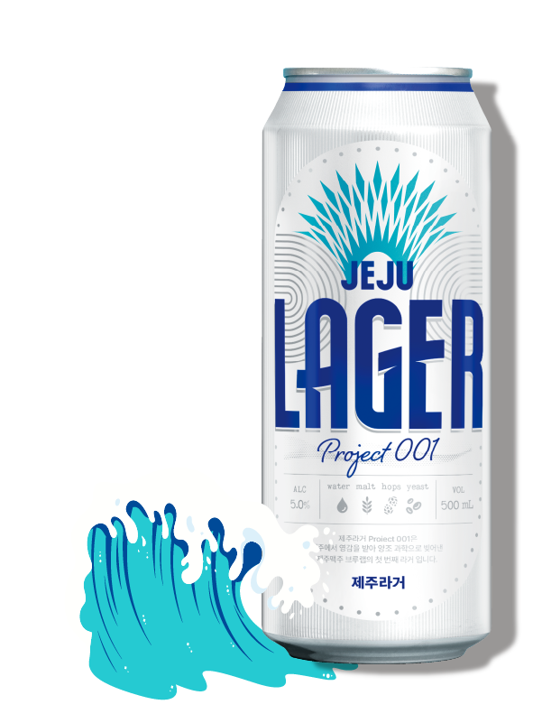

LOGIN
JOIN
CART
RECRUIT
논알콜 제주누보 구매
양조장 예약
BARREL SERIES
SUPPORTERS
JEJU BEER LIFE
SHOP
BREWERY

제주라거
는 맥주의 기본 4대 원료를 사용하는
독일 맥주 순수령 원칙을 지킨
제주 하얀 파도의 시원함과
부드러움을 닮은 올 몰트 라거입니다.
제주 위트 에일
은 제주 감귤 껍질의 상큼함과 섬세한 꽃 향,
입 안 가득 부드럽게 퍼지는 시트러스향이 만나
산뜻한 끝 맛을 선사하는 밀맥주입니다.
제주 펠롱 에일
은 반딧불이 반짝이는 곶자왈에서 영감을 받아 탄생하였습니다.
다양하고 개성있는 홉들을 블렌딩하여
시트러스 아로마와 진한 맥아의 맛이 어우러져
풍부한 풍미를 선사하는 페일에일 맥주입니다.
제주 거멍 에일
은제주의 여름밤을 떠올리게 하는 짙은 빛깔 속에서,
제주 흑보리와 초콜릿 밀로 완성된 은은한 달큰함과
경쾌한 풍미를 자아내는 흑맥주입니다.
제주맥주는
전국 편의점 및 대형마트
에서 만나보실 수 있습니다.
제주라거
는 맥주의 기본 4대 원료를 사용하는
독일 맥주 순수령 원칙을 지킨
제주 하얀 파도의 시원함과
부드러움을 닮은 올 몰트 라거입니다.
제주 위트 에일
은 제주 감귤 껍질의 상큼함과 섬세한 꽃 향,
입 안 가득 부드럽게 퍼지는 시트러스향이 만나
산뜻한 끝 맛을 선사하는 밀맥주입니다.
제주 펠롱 에일
은 반딧불이 반짝이는 곶자왈에서 영감을 받아 탄생하였습니다.
다양하고 개성있는 홉들을 블렌딩하여
시트러스 아로마와 진한 맥아의 맛이 어우러져
풍부한 풍미를 선사하는 페일에일 맥주입니다.
제주 거멍 에일
은제주의 여름밤을 떠올리게 하는 짙은 빛깔 속에서,
제주 흑보리와 초콜릿 밀로 완성된 은은한 달큰함과
경쾌한 풍미를 자아내는 흑맥주입니다.
제주맥주는
전국 편의점 및 대형마트
에서 만나보실 수 있습니다.